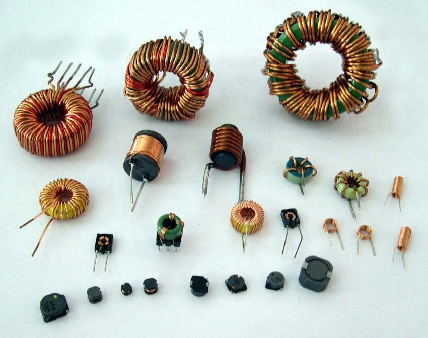
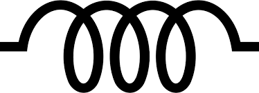

HOME BLOG EBOOKS ABOUT CONTACT SHOP
Like the resistor and the capacitor, the inductor is a very commonly used component in an electronic circuit. It appears in the shape of coils as shown below.

Inductor like the capacitor is an energy storing device, but it uses a completely different mechanism to do so. While the capacitor stores energy in the form of electrostatic energy, the inductor stores its energy in the form of magnetic energy. Despite this, Inductors aren’t primarily used as a storage devices, they are commonly used as filters and chokes. That’s because Inductors have the ability to suppress variation in current flowing through it.
The inductors ability to resist variation in current can be attributed to a phenomenon called Self Induction. The phenomenon can be better understood with the help of the figure below.
Consider just two turns of an inductor coil. When a current is passed through the inductor or more specifically the first turn of the inductor, it produces magnetic a field around it in a concentric manner (as with any other conductor). This magnetic field created by the first loop also links with the second loop, because of their proximity. The natural response of the second turn to this magnetic field, is to produce a current (or a counter magnetic field as represented by the bottom ring) such as to oppose the original current, in accordance with the Lenz’s law. The direction of the current induced in the second turn due to the field generated by the first loop is show by the dotted arrow. These currents will be generated whenever there is a variation in current in the inductor and it opposes the original inductor current. This ability of an Inductor to oppose change in current is called the Self Inductance or simply Inductance. It is denoted by the letter L and its unit is Henry (H).
As the number of windings in the coil is increased, the inductance also increases since the magnetic field from one coil will have more coils to interact with. So self-induction in a way, is the mutual induction between the loops of an inductor coil.
The commonly used symbol for an Inductor is,
